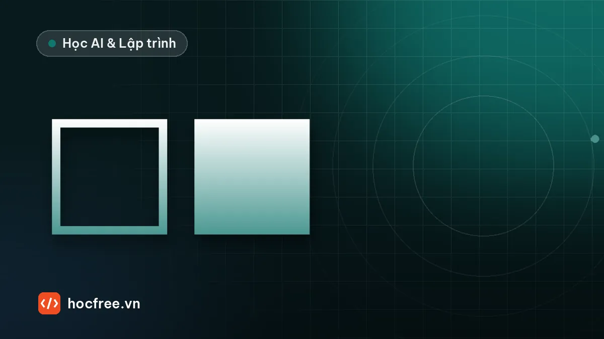

Morphology trong OpenCV: erode, dilate, opening, closing, top-hat
Làm sạch mặt nạ nhị phân: chọn phần tử cấu trúc và kích thước kernel, xóa nhiễu, lấp lỗ, nối nét đứt, top-hat cho nền sáng không đều.

Học xong bài này, bạn sẽ
- Hiểu phần tử cấu trúc
- Xóa nhiễu bằng opening, lấp lỗ bằng closing
- Dùng top-hat, gradient để làm nổi chi tiết
Nên học trước: Phân ngưỡng và contour: đếm, đo vật thể
Nội dung bài viết
Sau khi phân ngưỡng (bài trước), mặt nạ nhị phân hiếm khi sạch: có chấm nhiễu lốm đốm ngoài nền, lỗ thủng bên trong vật, đường nét bị đứt. Đếm contour trên mặt nạ như vậy sẽ ra hàng trăm "vật" giả. Morphology (hình thái học) là bộ công cụ dọn dẹp mặt nạ. Bài này là bước bắt buộc trước khi đếm, đo và phân loại vật ở các bài sau.
opencv-python, numpy). Mọi ví dụ tự tạo ảnh bằng NumPy nên chạy được ngay, không cần tải ảnh mẫu.1. Phần tử cấu trúc (kernel)
Morphology trượt một "con dấu" nhỏ, gọi là phần tử cấu trúc, qua từng điểm ảnh. Hình dạng và kích thước của con dấu quyết định kết quả. OpenCV tạo sẵn ba dạng:
import cv2
print(cv2.getStructuringElement(cv2.MORPH_RECT, (5, 5))) # vuông: giữ góc vuông
print(cv2.getStructuringElement(cv2.MORPH_ELLIPSE, (5, 5))) # elip: đều mọi hướng
print(cv2.getStructuringElement(cv2.MORPH_CROSS, (5, 5))) # chữ thập[[1 1 1 1 1]
[1 1 1 1 1]
[1 1 1 1 1]
[1 1 1 1 1]
[1 1 1 1 1]]
[[0 0 1 0 0]
[1 1 1 1 1]
[1 1 1 1 1]
[1 1 1 1 1]
[0 0 1 0 0]]
[[0 0 1 0 0]
[0 0 1 0 0]
[1 1 1 1 1]
[0 0 1 0 0]
[0 0 1 0 0]]- ELLIPSE: lựa chọn mặc định cho vật tròn, hạt, vết bẩn, vì nó tác động đều theo mọi hướng.
- RECT: cho vật có cạnh thẳng, góc vuông (linh kiện, nhãn, chữ).
- Kernel dạng thanh
(w, 1)hoặc(1, h): chỉ tác động theo một hướng, dùng nối nét ngang hoặc dọc (mục 5). - Kích thước nên là số lẻ (3, 5, 7…) để có tâm rõ ràng.
2. Hai phép gốc: erode và dilate
Mọi phép morphology khác đều ghép từ hai phép này:
- Erode (co): một điểm giữ màu trắng chỉ khi toàn bộ vùng dưới kernel đều trắng. Vật bị gọt mỏng đi, chấm nhỏ hơn kernel biến mất.
- Dilate (giãn): một điểm thành trắng nếu có ít nhất một điểm trắng dưới kernel. Vật phình ra, lỗ nhỏ bị lấp.
Xem trực tiếp trên một mảng nhỏ: một vật 3×5 và một chấm nhiễu ở góc.
import cv2
import numpy as np
a = np.zeros((7, 9), np.uint8)
a[2:5, 2:7] = 255 # vật 3 hàng × 5 cột
a[0, 0] = 255 # chấm nhiễu 1 pixel
k = np.ones((3, 3), np.uint8)
print((cv2.erode(a, k) > 0).astype(int))
print((cv2.dilate(a, k) > 0).astype(int))[[0 0 0 0 0 0 0 0 0]
[0 0 0 0 0 0 0 0 0]
[0 0 0 0 0 0 0 0 0]
[0 0 0 1 1 1 0 0 0]
[0 0 0 0 0 0 0 0 0]
[0 0 0 0 0 0 0 0 0]
[0 0 0 0 0 0 0 0 0]]
[[1 1 0 0 0 0 0 0 0]
[1 1 1 1 1 1 1 1 0]
[0 1 1 1 1 1 1 1 0]
[0 1 1 1 1 1 1 1 0]
[0 1 1 1 1 1 1 1 0]
[0 1 1 1 1 1 1 1 0]
[0 0 0 0 0 0 0 0 0]]Erode: vật 3×5 còn 1×3 (mất 1 pixel mỗi phía), chấm nhiễu biến mất. Dilate: vật thành 5×7, nhưng chấm nhiễu cũng to thành 2×2. Dùng riêng từng phép thì luôn có tác dụng phụ, nên trong thực tế ta ghép chúng thành opening và closing.
cv2.bitwise_not hoặc dùng THRESH_BINARY_INV trước, nếu không erode và dilate sẽ cho kết quả ngược.3. Opening xóa nhiễu, closing lấp lỗ
| Phép | Định nghĩa | Tác dụng |
|---|---|---|
| Opening | erode rồi dilate | Xóa chấm trắng nhỏ hơn kernel, cắt cầu nối mảnh, giữ gần nguyên kích thước vật |
| Closing | dilate rồi erode | Lấp lỗ đen nhỏ hơn kernel trong vật, nối khe hở hẹp, giữ gần nguyên kích thước vật |
Tạo một mặt nạ "bẩn" giống ảnh thật: 2 vật (một hình chữ nhật có 6 lỗ thủng, một hình tròn), cộng 1% điểm nhiễu ngẫu nhiên. Đếm số contour và số lỗ qua từng bước:
import cv2
import numpy as np
rng = np.random.default_rng(0)
m = np.zeros((300, 400), np.uint8)
cv2.rectangle(m, (40, 60), (160, 200), 255, -1)
cv2.circle(m, (280, 150), 70, 255, -1)
for _ in range(6): # 6 lỗ thủng bán kính 3 trong hình chữ nhật
x, y = rng.integers(60, 140), rng.integers(80, 180)
cv2.circle(m, (int(x), int(y)), 3, 0, -1)
m[rng.random(m.shape) < 0.01] = 255 # 1% điểm nhiễu
cv2.imwrite("mat_na_ban.png", m)
def dem_vat(mask):
cs, _ = cv2.findContours(mask, cv2.RETR_EXTERNAL, cv2.CHAIN_APPROX_SIMPLE)
return len(cs)
def dem_lo(mask):
cs, h = cv2.findContours(mask, cv2.RETR_CCOMP, cv2.CHAIN_APPROX_SIMPLE)
return sum(1 for x in h[0] if x[3] != -1) # contour có cha = lỗ bên trong vật
ke = cv2.getStructuringElement(cv2.MORPH_ELLIPSE, (5, 5))
mo = cv2.morphologyEx(m, cv2.MORPH_OPEN, ke)
dong = cv2.morphologyEx(mo, cv2.MORPH_CLOSE, ke, iterations=2)
print("ban đầu :", dem_vat(m), "vật,", dem_lo(m), "lỗ")
print("opening :", dem_vat(mo), "vật,", dem_lo(mo), "lỗ")
print("+closing:", dem_vat(dong), "vật,", dem_lo(dong), "lỗ")
print("số pixel trắng:", int((m > 0).sum()), int((mo > 0).sum()), int((dong > 0).sum()))ban đầu : 866 vật, 6 lỗ
opening : 2 vật, 6 lỗ
+closing: 2 vật, 0 lỗ
số pixel trắng: 33162 32254 32428Đọc kết quả:
- Ban đầu đếm ra 866 "vật": gần như toàn bộ là nhiễu. Đây là lý do không bao giờ đếm contour trực tiếp trên mặt nạ thô.
- Opening đưa về đúng 2 vật nhưng chưa lấp lỗ.
- Closing lấp hết 6 lỗ. Lỗ có đường kính 7 pixel, lớn hơn kernel 5×5, nên cần
iterations=2, tác dụng tương đương một kernel lớn hơn. - Số pixel trắng thay đổi rất ít (33162 → 32428), tức là kích thước vật gần như giữ nguyên. Đây là ưu điểm của opening và closing so với erode hoặc dilate đơn lẻ.
4. Chọn kích thước kernel
Đây là tham số quan trọng nhất và có quy tắc rõ ràng:
- Opening: kernel phải lớn hơn chấm nhiễu lớn nhất, nhưng nhỏ hơn chi tiết nhỏ nhất bạn cần giữ (chân linh kiện, nét chữ, vết lỗi cần phát hiện).
- Closing: kernel phải lớn hơn lỗ hoặc khe hở cần lấp, nhưng nhỏ hơn khoảng cách giữa hai vật riêng biệt (nếu không, hai vật bị dính làm một).
iterations=nvới kernel 3×3 tương đương kernel lớn hơn. Ví dụ hai lần erode 3×3 cho kết quả đúng bằng một lần erode 5×5:
import cv2
import numpy as np
a = (np.random.default_rng(2).random((50, 50)) > 0.5).astype(np.uint8) * 255
k3, k5 = np.ones((3, 3), np.uint8), np.ones((5, 5), np.uint8)
print(np.array_equal(cv2.erode(a, k3, iterations=2), cv2.erode(a, k5)))True5. Kernel một chiều: nối nét đứt theo một hướng
Đường kẻ, vạch mã vạch, dòng chữ thường bị phân ngưỡng làm đứt quãng. Closing với kernel dạng thanh ngang chỉ nối theo chiều ngang, không làm vật phình theo chiều dọc. Ví dụ: 14 đoạn dài 12 pixel, cách nhau 8 pixel:
import cv2
import numpy as np
d = np.zeros((60, 300), np.uint8)
for x in range(10, 290, 20):
cv2.rectangle(d, (x, 28), (x + 11, 32), 255, -1) # đoạn dài 12 px, khe hở 8 px
def dem_vat(mask):
cs, _ = cv2.findContours(mask, cv2.RETR_EXTERNAL, cv2.CHAIN_APPROX_SIMPLE)
return len(cs)
print("ban đầu:", dem_vat(d))
for w in (5, 7, 9, 11):
k = cv2.getStructuringElement(cv2.MORPH_RECT, (w, 1))
print(f"kernel {w}x1:", dem_vat(cv2.morphologyEx(d, cv2.MORPH_CLOSE, k)))ban đầu: 14
kernel 5x1: 14
kernel 7x1: 14
kernel 9x1: 1
kernel 11x1: 1Khe hở 8 pixel chỉ được nối khi kernel rộng lớn hơn 8 (từ 9 trở lên). Kỹ thuật này dùng để gom các ký tự thành một dòng khi tìm vùng chữ trước OCR (chặng 7), hoặc gom các vạch thành một khối khi tìm vùng mã vạch.
6. Gradient, top-hat, black-hat
| Phép | Công thức | Dùng khi |
|---|---|---|
| Gradient | dilate − erode | Lấy đường viền vật (độ dày khoảng bằng kernel) |
| Top-hat | ảnh − opening(ảnh) | Làm nổi chi tiết sáng nhỏ trên nền sáng không đều |
| Black-hat | closing(ảnh) − ảnh | Làm nổi chi tiết tối nhỏ (vết bẩn, chữ in đen) trên nền không đều |
Top-hat và black-hat áp dụng trên ảnh xám, không chỉ ảnh nhị phân. Đây là "vũ khí" khi đèn chiếu không đều làm phân ngưỡng toàn cục thất bại. Ví dụ: bề mặt có độ sáng tăng dần từ trái sang phải (40 → 200), trên đó có 12 chấm sáng nhỏ (sáng hơn nền 50 mức):
import cv2
import numpy as np
nen = np.tile(np.linspace(40, 200, 400), (300, 1)) # đèn chiếu lệch: trái tối, phải sáng
rng = np.random.default_rng(1)
cham = np.zeros((300, 400), np.uint8)
for x, y in zip(rng.integers(20, 380, 12), rng.integers(20, 280, 12)):
cv2.circle(cham, (int(x), int(y)), 4, 1, -1) # 12 chấm bán kính 4 px
anh = np.clip(nen + cham * 50, 0, 255).astype(np.uint8)
cv2.imwrite("be_mat.png", anh)
def dem_vat(mask):
cs, _ = cv2.findContours(mask, cv2.RETR_EXTERNAL, cv2.CHAIN_APPROX_SIMPLE)
return len(cs)
# Cách 1: Otsu trực tiếp
t, m1 = cv2.threshold(anh, 0, 255, cv2.THRESH_BINARY + cv2.THRESH_OTSU)
print(f"Otsu thô: ngưỡng {t:.0f}, {dem_vat(m1)} vật, {(m1 > 0).mean():.0%} ảnh là trắng")
# Cách 2: top-hat rồi phân ngưỡng
ke = cv2.getStructuringElement(cv2.MORPH_ELLIPSE, (15, 15)) # lớn hơn chấm (đường kính 9)
th = cv2.morphologyEx(anh, cv2.MORPH_TOPHAT, ke)
_, m2 = cv2.threshold(th, 25, 255, cv2.THRESH_BINARY)
print("Top-hat :", dem_vat(m2), "vật")Otsu thô: ngưỡng 119, 6 vật, 50% ảnh là trắng
Top-hat : 12 vậtOtsu thô chia ảnh thành "nửa trái tối, nửa phải sáng", hoàn toàn sai. Top-hat trừ đi nền (ước lượng bằng opening với kernel lớn hơn chấm), chỉ còn lại các chấm, nên đếm đúng 12. Ngưỡng 25 được chọn bằng một nửa độ chênh sáng của chấm so với nền (50). Quy tắc kernel: lớn hơn chi tiết cần tìm, nhưng đủ nhỏ để nền thay đổi chậm trong phạm vi kernel.
import cv2
import numpy as np
m = np.zeros((100, 100), np.uint8)
cv2.rectangle(m, (20, 20), (79, 79), 255, -1) # vuông 60×60
vien = cv2.morphologyEx(m, cv2.MORPH_GRADIENT, np.ones((3, 3), np.uint8))
print("pixel viền:", int((vien > 0).sum()))pixel viền: 480Viền dày 2 pixel (1 pixel phía ngoài do dilate, 1 pixel phía trong do erode): 62² − 58² = 480. Gradient hữu ích khi cần vẽ hoặc đo dải viền của vật, ví dụ kiểm tra mép keo, mép hàn.
7. Quy trình chuẩn cho mặt nạ
Gom lại thành một hàm dùng cho mọi bài sau. Các tham số nằm trong cấu hình, như bài tổ chức pipeline ở chặng 2:
import cv2
import numpy as np
def lam_sach_mat_na(mask, k_mo=5, k_dong=5, lap_dong=1):
"""Opening xóa nhiễu, sau đó closing lấp lỗ. mask: vật trắng trên nền đen."""
if k_mo > 1:
ke = cv2.getStructuringElement(cv2.MORPH_ELLIPSE, (k_mo, k_mo))
mask = cv2.morphologyEx(mask, cv2.MORPH_OPEN, ke)
if k_dong > 1:
ke = cv2.getStructuringElement(cv2.MORPH_ELLIPSE, (k_dong, k_dong))
mask = cv2.morphologyEx(mask, cv2.MORPH_CLOSE, ke, iterations=lap_dong)
return mask
m = cv2.imread("mat_na_ban.png", cv2.IMREAD_GRAYSCALE)
sach = lam_sach_mat_na(m, 5, 5, 2)
cs, _ = cv2.findContours(sach, cv2.RETR_EXTERNAL, cv2.CHAIN_APPROX_SIMPLE)
print(len(cs), "vật")2 vật8. Bài tập
Bài 1. Thêm vào mat_na_ban.png một vật nhỏ cần giữ (hình tròn bán kính 4 px, tức là rộng 9 px, ví dụ một chân linh kiện). Thử opening với kernel 3, 5, 7, 9, 11 và đếm vật. Kernel nào dùng được, và nên chọn giá trị nào?
Xem đáp án
import cv2
m = cv2.imread("mat_na_ban.png", cv2.IMREAD_GRAYSCALE)
cv2.circle(m, (360, 40), 4, 255, -1) # vật nhỏ cần giữ
for k in (3, 5, 7, 9, 11):
ke = cv2.getStructuringElement(cv2.MORPH_ELLIPSE, (k, k))
mo = cv2.morphologyEx(m, cv2.MORPH_OPEN, ke)
cs, _ = cv2.findContours(mo, cv2.RETR_EXTERNAL, cv2.CHAIN_APPROX_SIMPLE)
print(f"kernel {k}: {len(cs)} vật")kernel 3: 3 vật
kernel 5: 3 vật
kernel 7: 3 vật
kernel 9: 2 vật
kernel 11: 2 vậtKernel 3 đến 7 đều xóa hết nhiễu (nhiễu ở đây chỉ là các cụm 1–2 pixel) và giữ đủ 3 vật. Từ kernel 9, vật nhỏ rộng 9 px bị xóa mất, giống hệt chuyện một vết lỗi nhỏ bị "dọn sạch". Nên chọn kernel nằm giữa khoảng dùng được (ví dụ 5): vẫn còn dư địa khi nhiễu thật lớn hơn một chút, và chưa sát ngưỡng làm mất chi tiết.
Bài 2. Dùng black-hat để đếm vết bẩn tối trên nền không đều: tạo nền như mục 6 nhưng vẽ 8 chấm tối hơn nền 50 mức, rồi đếm.
Xem đáp án
import cv2
import numpy as np
nen = np.tile(np.linspace(80, 220, 400), (300, 1))
rng = np.random.default_rng(5)
cham = np.zeros((300, 400), np.uint8)
for x, y in zip(rng.integers(20, 380, 8), rng.integers(20, 280, 8)):
cv2.circle(cham, (int(x), int(y)), 4, 1, -1)
anh = np.clip(nen - cham * 50, 0, 255).astype(np.uint8)
ke = cv2.getStructuringElement(cv2.MORPH_ELLIPSE, (15, 15))
bh = cv2.morphologyEx(anh, cv2.MORPH_BLACKHAT, ke)
_, m = cv2.threshold(bh, 25, 255, cv2.THRESH_BINARY)
cs, _ = cv2.findContours(m, cv2.RETR_EXTERNAL, cv2.CHAIN_APPROX_SIMPLE)
print(len(cs), "vết bẩn")Kết quả là 8 nếu các chấm ngẫu nhiên không chồng lên nhau. Nếu có hai chấm chồng nhau, kết quả nhỏ hơn 8: đó là giới hạn của dữ liệu thử, không phải lỗi thuật toán.
Bài 3. Hai vật cách nhau 6 pixel. Bạn dùng closing kernel 9×9 để lấp lỗ. Chuyện gì xảy ra khi đếm vật, và sửa thế nào?
Xem đáp án
Kernel 9 rộng hơn khe hở 6 pixel nên closing nối hai vật thành một, kết quả đếm thiếu. Cách sửa: giảm kernel closing xuống dưới 6 (ví dụ 5) và tăng iterations chỉ khi cần; hoặc lấp lỗ bằng cách khác không ảnh hưởng ranh giới ngoài, ví dụ vẽ lại contour ngoài với thickness=-1 (cv2.drawContours(mask, cs, -1, 255, -1) với RETR_EXTERNAL) để tô kín vật mà không làm vật phình ra.
Tóm tắt
- Morphology làm việc với vật trắng trên nền đen.
- Opening = erode → dilate: xóa nhiễu. Closing = dilate → erode: lấp lỗ, nối khe. Thường opening trước rồi closing.
- Kernel: lớn hơn thứ cần xóa hoặc lấp, nhỏ hơn chi tiết cần giữ và khoảng cách giữa các vật.
- Kernel thanh
(w,1)nối nét theo một hướng. Top-hat và black-hat tìm chi tiết nhỏ sáng hoặc tối trên nền không đều. - Luôn kiểm tra rằng lỗi nhỏ nhất vẫn còn sau morphology.
Bài tiếp theo: mặt nạ đã sạch, ta tính đặc trưng của từng contour (diện tích, chu vi, độ tròn, góc xoay) để phân loại và kiểm tra vật.